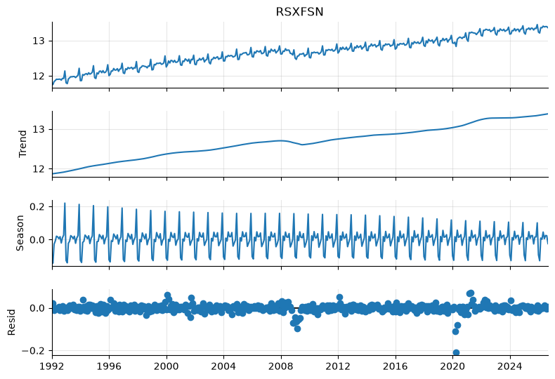
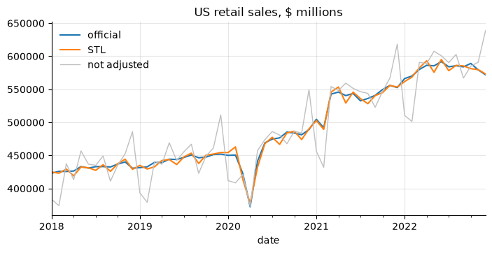

5. Seasonal adjustment#
A seasonally adjusted (SA) series removes the movements that repeat every year at the same time (Christmas sales, summer construction, school-year hiring) so that what remains is trend, cycle and irregular news.
import numpy as np
import pandas as pd
import matplotlib.pyplot as plt
import statsmodels.api as sm
from statsmodels.tsa.seasonal import STL, MSTL, seasonal_decompose
from econts import load
nsa = load("RSXFSN").asfreq("MS") # retail sales, not seasonally adjusted
sa_official = load("RSXFS").asfreq("MS")
y = np.log(nsa)
5.1. Is there seasonality?#
Look at the average by calendar month of the detrended series, and at the autocorrelation at the seasonal lag.
growth = 100 * y.diff()
by_month = growth.groupby(growth.index.month).mean().round(1)
print(by_month.to_string()) # December +15%, January -20%
print("ACF at lag 12:", round(sm.tsa.acf(growth.dropna(), nlags=12)[12], 2))
date
1 -25.4
2 -0.9
3 13.1
4 -1.7
5 5.9
6 -2.3
7 0.2
8 2.1
9 -6.4
10 3.4
11 1.9
12 14.6
ACF at lag 12: 0.92
A quick formal test: regress the growth rate on month dummies and test that they are jointly equal (an F-test).
df = pd.DataFrame({"g": growth, "month": growth.index.month}).dropna()
ols = sm.formula.ols("g ~ C(month)", data=df).fit()
print(f"F = {ols.fvalue:.0f}, p = {ols.f_pvalue:.1e}")
F = 408, p = 4.4e-211
5.2. Classical decomposition#
seasonal_decompose is the textbook method: a centered moving average for
the trend and fixed seasonal factors. Simple, but the seasonal pattern cannot
change over time and the trend is missing at both ends.
classic = seasonal_decompose(nsa, model="multiplicative", period=12)
sa_classic = nsa / classic.seasonal
print(classic.seasonal["2024"].round(3).to_string())
date
2024-01-01 0.898
2024-02-01 0.886
2024-03-01 1.008
2024-04-01 0.986
2024-05-01 1.042
2024-06-01 1.014
2024-07-01 1.012
2024-08-01 1.031
2024-09-01 0.963
2024-10-01 0.993
2024-11-01 1.008
2024-12-01 1.162
Freq: MS
5.3. STL#
STL (Cleveland et al., 1990) lets the seasonal pattern evolve, has no end
point loss and, with robust=True, downweights outliers such as the 2020
lockdowns, so they do not contaminate the seasonal factors.
stl = STL(y, period=12, seasonal=13, robust=True).fit()
sa_stl = np.exp(y - stl.seasonal)
fig = stl.plot()
fig.set_size_inches(8, 6)

Main knobs: seasonal (odd, ≥ 7) is the length of the seasonal smoother:
larger means more stable seasonal factors. trend defaults to a sensible
value given seasonal. Check the result against the official series:
cmp = pd.DataFrame({"official": sa_official, "STL": sa_stl, "classical": sa_classic})
mm = 100 * np.log(cmp).diff()
print(mm.corr().round(3))
print(
"RMS gap to official m/m (pp):",
np.sqrt(((mm.sub(mm["official"], axis=0)) ** 2).mean()).round(2).to_dict(),
)
ax = cmp.loc["2018":"2022", ["official", "STL"]].plot()
nsa["2018":"2022"].plot(ax=ax, color="0.75", lw=1, label="not adjusted")
ax.set_title("US retail sales, $ millions")
ax.legend()
official STL classical
official 1.000 0.708 0.626
STL 0.708 1.000 0.803
classical 0.626 0.803 1.000
RMS gap to official m/m (pp): {'official': 0.0, 'STL': 1.69, 'classical': 2.26}
<matplotlib.legend.Legend at 0x1ffe216f110>

STL tracks the official adjustment closely in levels, but month-on-month changes differ by 1.7 pp on average. Most of the gap is calendar effects: a month with five Fridays and Saturdays sells more than one with five Mondays, and Easter moves between March and April. STL cannot see those; X-13 can.
5.4. Trading-day and Easter effects#
You can get most of the way with STL by adding a regression on calendar counts: weekday counts relative to Sundays, month length, and the share of the eight days before Easter that fall in each month.
from dateutil.easter import easter
WEEKDAYS = ["Monday", "Tuesday", "Wednesday", "Thursday", "Friday", "Saturday"]
def calendar_regressors(index: pd.DatetimeIndex) -> pd.DataFrame:
"""Trading-day contrasts, month length and an Easter regressor, monthly."""
days = pd.date_range(index[0], index[-1] + pd.offsets.MonthEnd(0), freq="D")
counts = pd.crosstab(days.to_period("M"), days.day_name())
X = counts[WEEKDAYS].sub(counts["Sunday"], axis=0)
length = counts.sum(axis=1)
X["length"] = length - length.mean()
pre_easter = {
yr: pd.date_range(easter(yr) - pd.Timedelta(days=8), periods=8)
for yr in index.year.unique()
}
X["easter"] = [
(pre_easter[p.year].month == p.month).mean() if p.month in (3, 4) else 0.0
for p in X.index
]
X.index = index
return X.astype(float)
X = calendar_regressors(y.index)
calendar = pd.Series(0.0, index=y.index)
for _ in range(2): # alternate: STL, then calendar regression
stl_td = STL(y - calendar, period=12, seasonal=13, robust=True).fit()
irregular = y - stl_td.seasonal - stl_td.trend
reg = sm.OLS(irregular, sm.add_constant(X)).fit()
calendar = X @ reg.params[X.columns]
sa_stl_td = np.exp(y - stl_td.seasonal - calendar)
mm2 = (
100
* np.log(
pd.DataFrame(
{"official": sa_official, "STL": sa_stl, "STL + calendar": sa_stl_td}
)
).diff()
)
print(mm2.corr()["official"].round(2).to_dict())
print(
"RMS gap (pp):",
np.sqrt(mm2.sub(mm2["official"], axis=0).pow(2).mean()).round(2).to_dict(),
)
{'official': 1.0, 'STL': 0.71, 'STL + calendar': 0.87}
RMS gap (pp): {'official': 0.0, 'STL': 1.69, 'STL + calendar': 0.94}
In your projects
The same recipe is in the econts toolkit:
from econts.seasonal import calendar_regressors, stl_adjust
sa = stl_adjust(nsa, calendar=True)["sa"]
The calendar regression raises the m/m correlation with the official series from 0.71 to 0.87 and nearly halves the gap. X-13 does this properly, with the calendar effects estimated jointly in a regARIMA model.
5.5. X-13ARIMA-SEATS#
The US Census Bureau’s program, the standard at statistical agencies. It
pre-adjusts with a regARIMA model (outliers, trading days, Easter), then
applies X-11 filters or SEATS. statsmodels wraps it, but you must download
the x13as executable from the
Census Bureau and put it
on your PATH (or pass x12path=).
# requires: x13as
from statsmodels.tsa.x13 import x13_arima_analysis
x13 = x13_arima_analysis(nsa["2010":"2019"], log=True, outlier=True, trading=True)
print(x13.results[:2000]) # the full X-13 diagnostic output
sa_x13 = x13.seasadj
If you work in R, the seasonal package is the most convenient X-13
interface, and JDemetra+ is the European (Eurostat/ECB) standard.
5.6. Regression on seasonal dummies#
For a quick, transparent adjustment inside a model, include month (or quarter) dummies. This assumes deterministic, constant seasonality.
dummies = pd.get_dummies(y.index.month, prefix="m", drop_first=True, dtype=float)
dummies.index = y.index
trend = np.arange(len(y), dtype=float)
X = sm.add_constant(dummies.assign(t=trend, t2=trend**2))
fit = sm.OLS(y, X).fit()
seasonal_part = dummies @ fit.params[dummies.columns]
sa_dummies = np.exp(y - seasonal_part + seasonal_part.mean())
5.7. Multiple seasonal periods: MSTL#
High-frequency data can have several cycles: hourly electricity demand has a
daily (24) and a weekly (168) pattern; daily data have weekly and annual
cycles. MSTL peels them off one at a time. A simulated hourly example:
rng = np.random.default_rng(0)
hours = pd.date_range("2025-01-01", periods=24 * 7 * 8, freq="h")
h = np.arange(len(hours))
load_mw = (
100
+ 0.01 * h
+ 15 * np.sin(2 * np.pi * h / 24)
+ 8 * np.sin(2 * np.pi * h / 168)
+ rng.normal(0, 2, len(h))
)
mstl = MSTL(pd.Series(load_mw, index=hours), periods=(24, 168)).fit()
print(mstl.seasonal.std().round(1)) # amplitude of each seasonal component
seasonal_24 10.6
seasonal_168 5.7
dtype: float64
5.8. Year-on-year growth as a substitute#
The y/y growth of an unadjusted series removes stable seasonality without any model. It lags turning points by about six months and carries base effects (a big move twelve months ago reappears, inverted, today).
yoy_nsa = 100 * nsa.pct_change(12)
yoy_sa = 100 * sa_official.pct_change(12)
print((yoy_nsa - yoy_sa).abs().describe().round(2)) # close, not identical
count 405.00
mean 0.94
std 0.89
min 0.00
25% 0.28
50% 0.56
75% 1.55
max 4.88
dtype: float64
5.9. Pitfalls#
Direct vs indirect adjustment: adjusting the total is not the same as adding up adjusted components. Pick one and document it.
End-point revisions: seasonal factors at the end of the sample are revised as new data arrive. Real-time analysis must use real-time vintages.
COVID: 2020-21 broke many seasonal models. Use
robust=True, or treat the period with outlier regressors (X-13) so it does not distort the seasonal factors for years after.Series with zero or negative values cannot be adjusted multiplicatively; use the additive model on levels.
Quarterly data:
period=4, and STLseasonal=7is a common choice.
5.10. Summary#
Use the official SA series when one exists. Adjust yourself only for series nobody adjusts, or to build something new.
Adjust in logs (multiplicative seasonality) for anything whose seasonal swing grows with its level.
STL is the best quick tool in Python. X-13ARIMA-SEATS is what statistical offices use; it also handles trading-day and Easter effects.
Never seasonally adjust an already-adjusted series, and never compute m/m changes on unadjusted data.
5.11. Exercises#
Compute the average monthly change of the unadjusted unemployment rate (
UNRATENSA) by calendar month for 2010–2019, and test the month dummies jointly with an F-test. Which months carry the largest seasonal rise and fall, and why might that be?Adjust
UNRATENSAwith STL (period=12,robust=True). Should you work in logs or levels for a rate? Compare the m/m changes of your series with the officialUNRATEover 2010–2019 (correlation and RMS gap).Aggregate unadjusted retail sales (
RSXFSN) to quarters (chapter 3), adjust the quarterly series in logs with STL (period=4,seasonal=7), and compare its q/q growth with quarterly-aggregatedRSXFS. Is quarterly adjustment closer to or further from the official series than the monthly STL of the chapter?Fit STL to log
RSXFSNwithrobust=Trueand withrobust=False, and compare the seasonal factors for March and April in 2019 and 2022. How much does the 2020 lockdown contaminate later seasonal factors without the robust option?